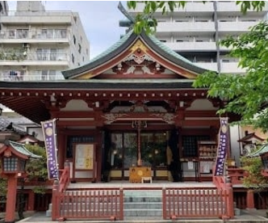
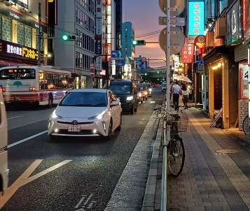

Over the summer, I had the incredible opportunity of getting to travel to Japan- a destination I’d dreamed of visiting for as long as I can remember, a futuristic land full of neon signs, skyscrapers, holographic singers and. . . fax machines?
Despite being known for innovative technological advancements such as the bullet train, Japan often still lives in the past. Instead of having an app or QR code on your phone to access said bullet trains, you need to have a paper ticket called a JR pass - a small, flimsy ticket that if lost will set you back hundreds of pounds with little chance of a refund. Unfortunately, I speak from experience. It was also only recently announced that Japan would be ending the use of floppy disks to store important government files, a device invented in 1971 that has since been disregarded almost everywhere else. For reference, a 9cm floppy disk could only store 1.44MB worth of data, meaning that you would require 22,000 floppy disks to store the same amount of data as a single 32GB USB stick.

It was also commonplace to find locals taking a stroll wearing traditional outfits such as kimonos or yukata – something I got to partake in myself while at a traditional tea ceremony in Kyoto. Food has also not been subject to much change or western influence over the years, with cosy ramen and sushi restaurants on almost every street, the hand crafted delicacies having been passed down through many generations.

While in the city of Nara (the ancient capital) my family had the privilege of staying the night in a traditional Ryokan house, complete with Tatami mat flooring and Futons to sleep in. Though experiencing a culture so far from what we’re used to can feel confusing and intimidating it is also something to be cherished. I would recommend visiting Japan if you are even only a little interested as it has so much to offer from the ancient to the modern. Despite staying for two weeks I only got to explore a fraction of the country and would definitely take the opportunity to return if ever given the chance. From the people to the food and the cherry blossoms, Japan is an unforgettable location for any traveller… even if floppy disks can’t store a single selfie.